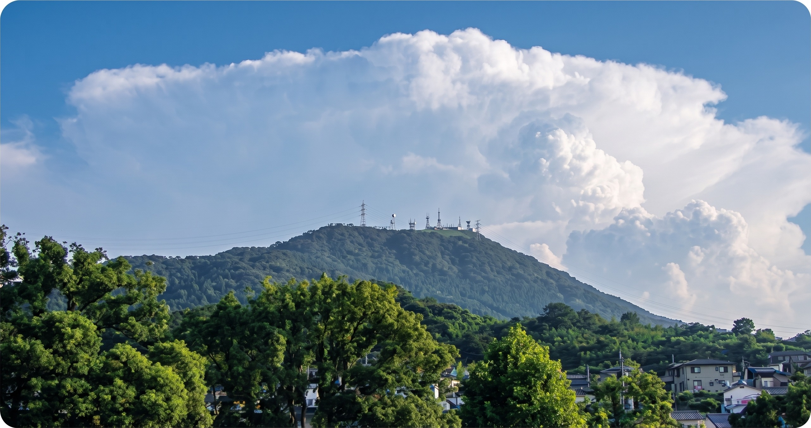

戦略の概要
都市に近接する豊かな自然「アーバンネイチャー北九州」を軸に、「都市と自然の共生」というネイチャーポジティブのグローバルモデルを目指す6年間の戦略です。市民・企業・行政が一体となり、自然の保全と回復、地域の魅力向上、持続可能な成長を同時に実現することを目指します。
生物多様性基本法第13条第1項に基づく地域戦略として、国の生物多様性国家戦略2023-2030とも連動しています。
3つの基本目標
戦略が掲げる具体的な目標と、2030年までの数値指標
生物多様性を大切にする価値観の形成
市民が自然や生き物と触れ合う機会を創出し、保全・回復に貢献する行動やライフスタイルへの転換を促す。
2030年目標：市民認知度60% ／ 保全活動参加率50%
生物多様性の適切な保全と回復
OECMの拡大や里地里山の回復など、保全・回復に貢献する市民・企業をサポートする。
2030年目標：陸地の保全地域30% ／ 自然共生サイト認定5カ所
自然を活用した多様な課題の解決
カーボンニュートラルやサーキュラーエコノミーと統合し、観光・農林水産業の振興にもつなげる。
2030年目標：NP宣言参加団体30団体 ／ NP経営企業30社
私たちにできること
日々の暮らしの中で、一人ひとりが無理なくできる5つのアクション
-
たべよう
地元でとれたものを食べ、旬のものを味わう。
-
ふれよう
自然の中へ出かけ、生きものに触れる。
-
つたえよう
写真や文章で自然の素晴らしさを伝える。
-
まもろう
地域や全国の保全活動に参加する。
-
えらぼう
日々の生活で環境に優しい行動を選ぶ。
「アーバンネイチャー北九州」を世界に発信し、都市と自然の共生を実現する
市民・企業・行政が一体となって、ネイチャーポジティブな未来をともにつくります。